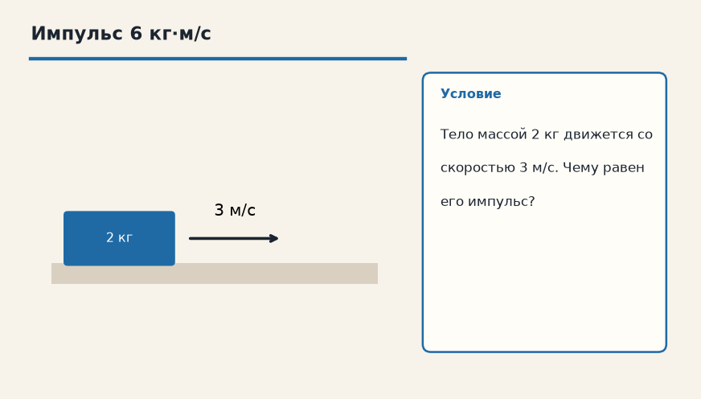

Тема «Импульс тела»: физический смысл, единицы величин, типичные ошибки и два разобранных примера.

Схема к условию.
Физический смысл
Мера механического движения. Чем больше масса и скорость, тем сложнее остановить тело.
Импульс p = m·v — это «запас движения»: остановить тело тем труднее, чем больше масса и чем больше скорость. Направление импульса совпадает с направлением скорости.
В замкнутой системе, где внешние силы отсутствуют или компенсируются, сумма импульсов до взаимодействия равна сумме после. Внутренние силы удара ходят парами по третьему закону и общий импульс не меняют.
Выстрел из пушки — классическая пара: ядро лёгкое и быстрое, пушка тяжёлая и медленная, а произведения m·v по модулю равны, если система была в покое. В задаче карточки внешнего удара нет: просто p = 2 кг · 3 м/с = 6 кг·м/с.
Формула и единицы
p = m · v
p = m·v. Единица — кг·м/с. В замкнутой системе сумма импульсов сохраняется.
Пояснение
Выстрел из пушки. Масса ядра мала, скорость огромна. Масса пушки большая, скорость отдачи маленькая. m_п · v_п = m_я · v_я
Пушка и ядро: маленькая масса на огромной скорости и большая масса на маленькой отдаче. m_п·v_п = m_я·v_я.
Типичные ошибки
Импульс — вектор. «Сумма» в законе сохранения учитывает направления, а не только модули. И закон пишут для замкнутой системы.
Схему к задаче нарисуйте сами. Решение открывается отдельно.
Разбор 1
Тележка
Тележка массой 5 кг катится со скоростью 4 м/с. Найдите импульс.
Сначала данные, затем перевод в СИ, если он нужен, потом ход и ответ.
Дано. m = 5 кг, v = 4 м/с
В СИ. Перевод не нужен: все величины уже заданы в СИ.
Найти. p
Решение.
p = 5 · 4 = 20 кг·м/с по скорости.
20 кг·м/с.
Схема для сверки. Её рисуют до того, как открывают решение.
Разбор 2
Отдача ружья
Пуля массой 10 г вылетает со скоростью 400 м/с. Масса ружья 4 кг, до выстрела всё покоилось. Найдите скорость отдачи. Внешний импульс за время выстрела не учитывайте.
Сначала данные, затем перевод в СИ, если он нужен, потом ход и ответ.
Дано. m = 10 г, v = 400 м/с, M = 4 кг
В СИ.
10 г = 0,01 кг.
Найти. V
Решение.
0 = 0,01 · 400 − 4 V.
V = 4 / 4 = 1 м/с.
1 м/с назад.
Схема для сверки. Её рисуют до того, как открывают решение.
Разбор 3
Навстречу
Тело 3 кг движется вправо со скоростью 4 м/с, тело 2 кг — влево со скоростью 1 м/с. Найдите суммарный импульс, вправо считайте положительным направлением.
Сначала данные, затем перевод в СИ, если он нужен, потом ход и ответ.
Дано. p₁ = 3 · 4 вправо, p₂ = 2 · 1 влево
В СИ. Перевод не нужен: все величины уже заданы в СИ.
Найти. сумма p
Решение.
p = 12 − 2 = 10 кг·м/с вправо.
10 кг·м/с вправо.
Схема для сверки. Её рисуют до того, как открывают решение.
Разбор 4
Разрыв
Снаряд массой 6 кг летел со скоростью 10 м/с и разорвался на части 2 кг и 4 кг вдоль прежней прямой. Часть 2 кг полетела вперёд со скоростью 30 м/с. Найдите скорость второй части сразу после разрыва.
Сначала данные, затем перевод в СИ, если он нужен, потом ход и ответ.
Дано. до разрыва p = 6 · 10, m₁ = 2 кг, v₁ = 30 м/с, m₂ = 4 кг
В СИ. Перевод не нужен: все величины уже заданы в СИ.
Найти. v₂
Решение.
60 = 2 · 30 + 4 v₂.
60 = 60 + 4 v₂, v₂ = 0.
0.
Схема для сверки. Её рисуют до того, как открывают решение.
Разбор 5
Единица
В каких единицах измеряют импульс в СИ?
Сначала данные, затем перевод в СИ, если он нужен, потом ход и ответ.
Дано. p = m v
В СИ. Перевод не нужен: все величины уже заданы в СИ.
Найти. единица
Решение.
Килограмм умножить на метр в секунду.
кг·м/с.
Схема для сверки. Её рисуют до того, как открывают решение.
Разбор 6
Лодка и человек
Человек массой 60 кг спрыгивает с неподвижной лодки массой 120 кг со скоростью 3 м/с относительно воды. С какой скоростью поедет лодка? Трением о воду пренебрегите.
Сначала данные, затем перевод в СИ, если он нужен, потом ход и ответ.
Дано. m = 60 кг, v = 3 м/с, M = 120 кг
В СИ. Перевод не нужен: все величины уже заданы в СИ.
Найти. V
Решение.
0 = 60 · 3 − 120 V.
V = 180 / 120 = 1,5 м/с в противоположную сторону.
1,5 м/с от человека.
Схема для сверки. Её рисуют до того, как открывают решение.
Разбор 7
Замкнутость
Можно ли писать сохранение импульса для шайбы, которую тормозит лёд, если других тел в систему не включают?
Сначала данные, затем перевод в СИ, если он нужен, потом ход и ответ.
Дано. есть внешняя сила трения
В СИ. Перевод не нужен: все величины уже заданы в СИ.
Найти. вывод
Решение.
Трение — внешняя сила для одной шайбы.
Импульс шайбы не сохраняется.
Нет.
Схема для сверки. Её рисуют до того, как открывают решение.